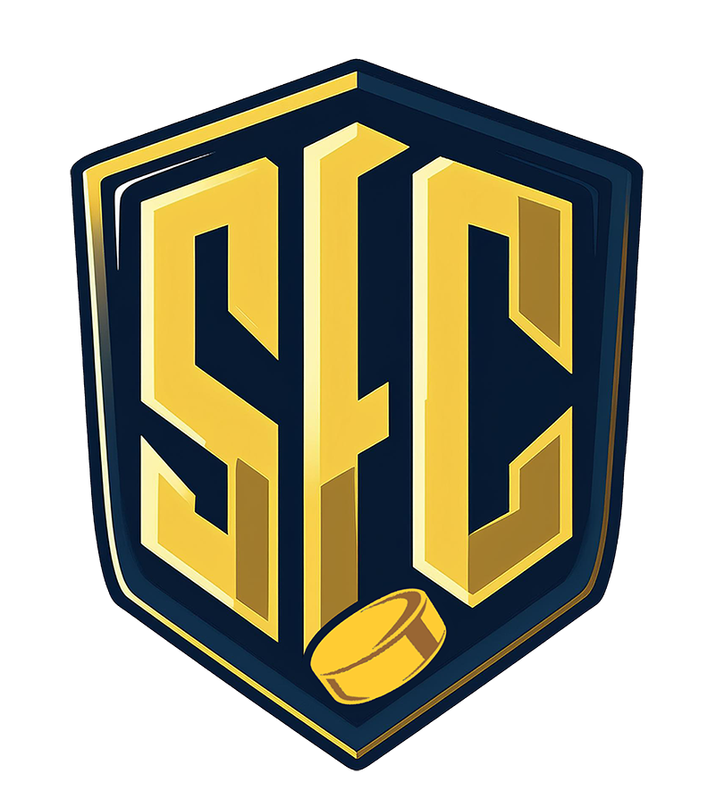

MATCHSTREAM

SEC 21 · BRONSMATCHDAANKERZQUAD vs VÄSTERÅS IK
ON AIR
LIVE MATCH
SVENSK eHOCKEY PRESENTERAR
GAME
NIGHT
SLUTSPEL · BEST OF 5
SERIELÄGE
0–0MATCHER
TIDIGARE MATCHER
NÄSTA MATCH · MATCH 1
LIVEVS20:00
STARTING SIXHEMMALAG
LW
1
LEFT WINGC
2
CENTERRW
3
RIGHT WINGLD
4
LEFT DEFG
5
GOALIERD
6
RIGHT DEFHEAD TO HEADMATCHUP
SEC 21 · GRUPPSPELTABELLEN
TEAM COMPARISONLAGDUELLEN
OFFENSIVE LEADERSPOÄNGLIGAN
GRUPPSPEL + SLUTSPELFORM GUIDE
SCORING PROFILEOFFENSIV KRAFT
DEFENSIVE LEADERSBACKLIGAN
BETWEEN THE PIPESMÅLVAKTSLIGAN
ROAD TO BRONZEVÄGEN TILL BRONSMATCHEN
SEC 21 · GRUPPSPEL + SLUTSPELPLAYERS TO WATCH
PAUS
0BORTALAG
VI ÄR STRAX TILLBAKA
OFFENSIVE UNITSFORWARD BATTLE
DEFENSIVE PAIRSBLUE LINE BATTLE
BETWEEN THE PIPESGOALIE BATTLE
DATA-DRIVEN DUELKEY MATCHUP
LIVE VIDEO / OBS
KOMMENTATORPeter “Fläcken” Novara
SVENSK eHOCKEY6V6 · NHL 27
Kompakt program-preview. Full 1920×1080-output öppnas separat för OBS.
SCEN
LIVE VIDEOTwitch matchfeedVisas bakom transparent broadcastgrafik i studiopreviewn.
INGEN STREAM LADDAD
SCENVERKTYGSnabbkontrollerMatch och sändningskontroller utan att lämna programvyn.